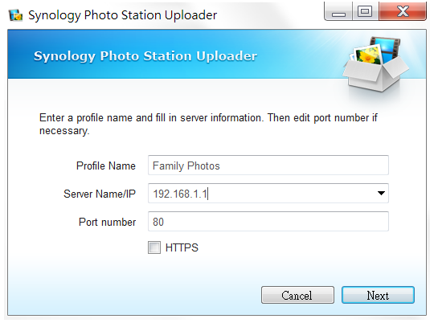

Przegląd
Photo Station to aplikacja internetowa, która pomaga organizować i wyświetlać przez Internet zdjęcia zapisane na serwerze NAS Synology. Dzięki wyszukanemu i przyjaznemu dla użytkownika interfejsowi, aplikacja Photo Station umożliwia przesyłanie, przeglądanie, zarządzanie i udostępnianie albumów ze zdjęciami za pomocą kilku prostych kliknięć.
1. Instalacja pakietu Photo Station
Aby zainstalować pakiet Photo Station, przejdź do pozycji Centrum pakietów, odszukaj pakiet Photo Station, a następnie kliknij przycisk Zainstaluj.

2. Przesyłanie zdjęć
Zanim będzie można przeglądać zdjęcia i zarządzać nimi w aplikacji Photo Station, należy utworzyć albumy i przesłać zdjęcia za pomocą jednej z poniższych metod.
2.1 Przesyłanie zdjęć za pomocą aplikacji Photo Station Uploader (dla systemu Windows i Mac)
Zalecamy użycie aplikacji Photo Station Uploader, ponieważ w procesie przesyłania zostaną wygenerowane miniatury każdego zdjęcia. Przesyłanie plików za pomocą aplikacji Photo Station Uploader pozwala wykorzystać moc obliczeniową komputera do przyspieszenia kompresji.
- Pobierz i zainstaluj aplikację Photo Station Uploader (dostępna w Centrum pobierania firmy Synology).
- Na komputerze kliknij prawym przyciskiem myszy dowolne zdjęcie, które chcesz przesłać, a następnie wybierz pozycję Prześlij do Photo Station > Utwórz nowy profil, aby otworzyć kreatora.
- Wprowadź wybraną nazwę oraz nazwę serwera/adres IP docelowego serwera NAS Synology w nowym profilu. 
- Wybierz, czy chcesz przesłać pliki do aplikacji Photo Station, czy do osobistej aplikacji Photo Station.
- Wprowadź poświadczenia użytkownika dla docelowego serwera NAS Synology.
- Kliknij Przeglądaj, aby wybrać folder docelowy lub utworzyć podfolder we współdzielonym folderze photo.
- Po zakończeniu przesyłania można uruchomić aplikację Photo Station na serwerze NAS Synology, aby wyświetlić przesłane pliki w różnych trybach lub edytować inne informacje, takie jak właściwości albumu i uprawnienia dostępu.
Podane informacje na temat serwera i poświadczeń użytkownika zostaną zapisane w tym profilu na przyszłość. Można skonfigurować kilka profili, stosownie do reguł lub miejsc docelowych. Zamiast ponownie wypełniać informacje na temat serwera podczas korzystania z aplikacji Photo Station Uploader, można wybrać istniejący profil i użyj jego skonfigurowanej wcześniej konfiguracji, aby przesłać zdjęcia do tego samego miejsca docelowego.

2.2 Tworzenie albumów i przesyłanie zdjęć za pośrednictwem aplikacji Photo Station
Uruchom aplikację Photo Station i kliknij Dodaj, aby utworzyć nowy album lub przesłać zdjęcia z komputera lub serwera NAS Synology do istniejących albumów.

Jeśli użytkownik woli przesyłać zdjęcia za pośrednictwem interfejsu aplikacji Photo Station, zalecane jest włączenie usługi QuickConnect. Usługa QuickConnect pozwala na dostęp do serwera NAS Synology i aplikacji Photo Station w domu lub poza nim, z dowolnego miejsca sieci Internet, za pomocą niestandardowego identyfikatora, a przy tym bez konieczności wprowadzania skomplikowanych konfiguracji sieciowych, takich jak reguły przekierowania portów. Więcej informacji na temat usługi QuickConnect można uzyskać w tym samouczku.
3. Udostępnianie zdjęć
Dzięki funkcji udostępniania można z łatwością udostępnić zdjęcia zapisane w aplikacji Photo Station przyjaciołom lub przesłać zdjęcia do popularnych sieci społecznościowych, takich jak Facebook, Picasa i Flickr.
3.1 Publiczne udostępnianie zdjęć
- Przejdź do albumu i wybierz zdjęcia, które chcesz udostępnić.
- Kliknij Udostępnij > Udostępnij publicznie, aby uzyskać łącze.
- Jeśli wybrano tylko jedno zdjęcie do udostępnienia, zdjęcie zostanie dodane do udostępnionej kolekcji o nazwie Udostępnione zdjęcia. Można tam zarządzać wszystkimi zdjęciami, które zostały udostępnione pojedynczo.
- Jeśli wybrano wiele zdjęć do udostępnienia, zostaną one umieszczone w nowym udostępnionym albumie.
- Ewentualnie można również kliknąć pozycję Udostępnij > Dodaj do udostępnionego albumu, aby dodać wybrane zdjęcia do istniejącego udostępnionego albumu (jeśli ma to zastosowanie).
- Wprowadź nazwę nowego udostępnionego albumu i określ jego okres ważności, jeśli jest to konieczne.
- Skopiuj i wklej łącze w wiadomości e-mail, komunikatorze i na stronach internetowych, aby udostępnić wszystkim wybrane zdjęcia.

- Wszystkie udostępnione zdjęcia są dostępne publicznie dla każdej osoby posiadającej łącze.
- Można określić, którzy użytkownicy mają uprawnienia do publicznego udostępniania pozycji w aplikacji Photo Station za pomocą opcji Ustawienia > Udostępnianie.
3.2 Udostępnianie zdjęć w sieciach społecznościowych
- Wybierz zdjęcia, które chcesz przesłać, a następnie wybierz pozycję Udostępnij > Prześlij do [witryn serwisów społecznościowych].
- W wyświetlonym oknie kliknij Połącz z [witrynami serwisów społecznościowych], a następnie dokonaj uwierzytelnienia na koncie serwisu społecznościowego. Można wybrać przesłanie zdjęć do nowego lub istniejącego albumu.

4. Organizowanie i oglądanie zdjęć na urządzeniach mobilnych
Aby połączyć się z aplikacją Photo Station lub przesłać zdjęcia za pomocą urządzeń mobilnych, można zainstalować aplikację DS photo+ na urządzeniach mobilnych, korzystając z poniższych kodów QR.